UChicago Experimental Design 2
Nakwon Rim
2026-04-28
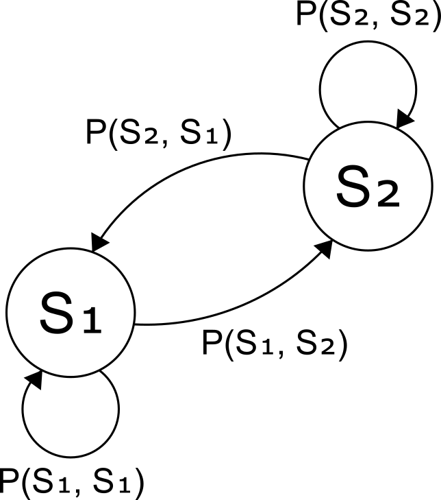
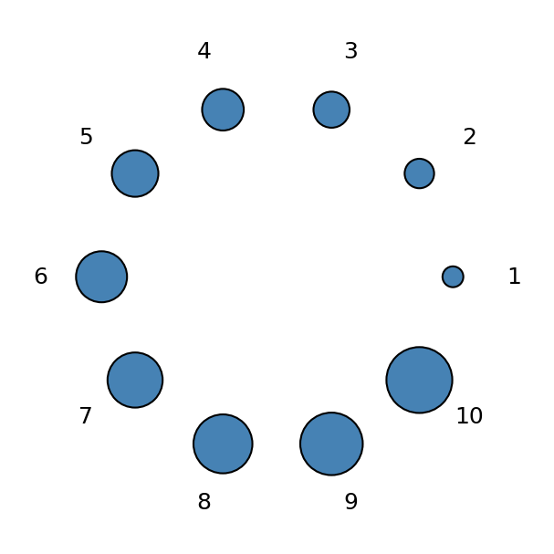
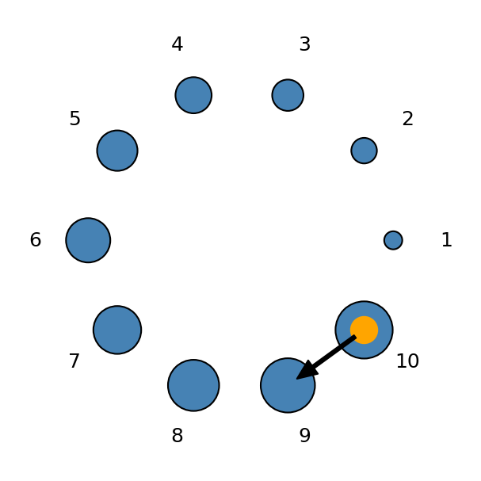
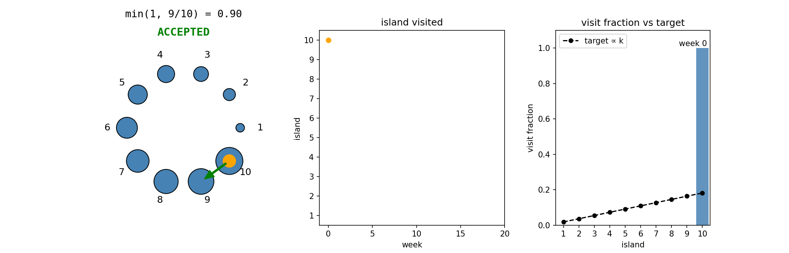
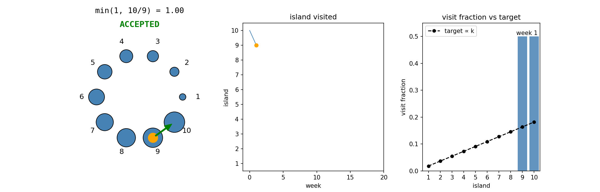
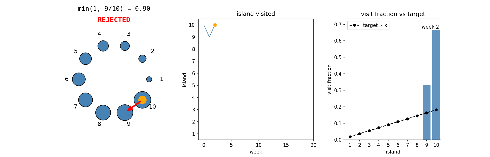
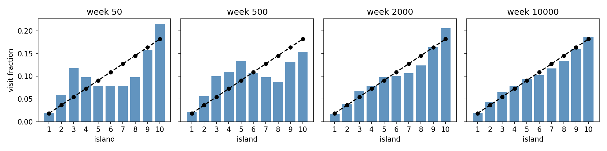
- Acceptance rate: 83.40%| Analogy | MCMC |
|---|---|
| Islands | Parameter values |
| Island sizes | Posterior probabilities |
| Weeks on an island | Samples from the posterior |
Let’s see this work in a simple regression setup
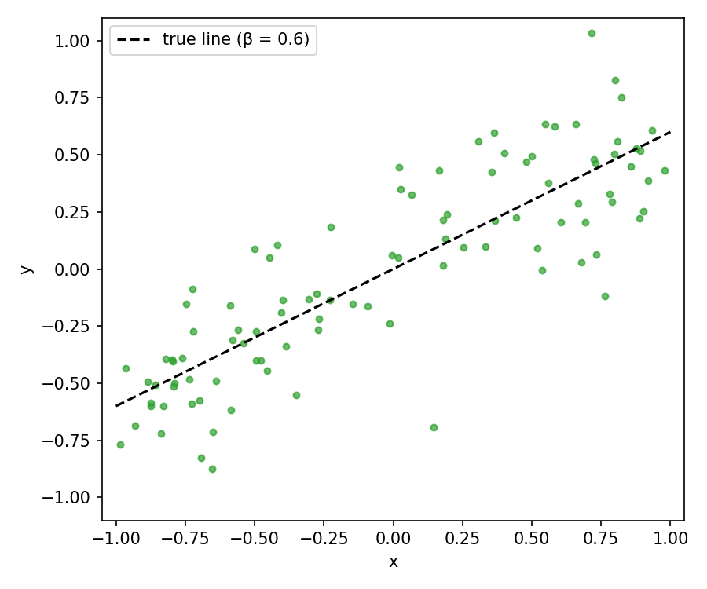
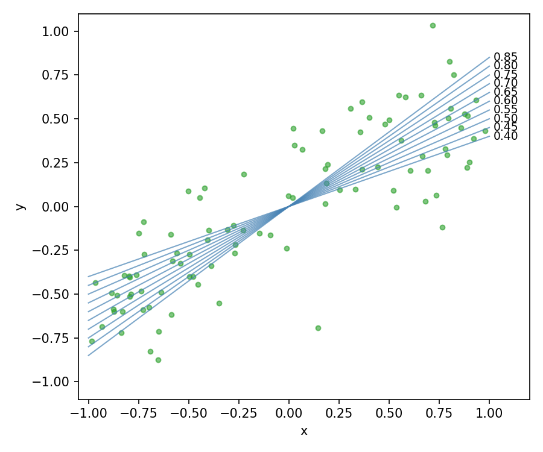
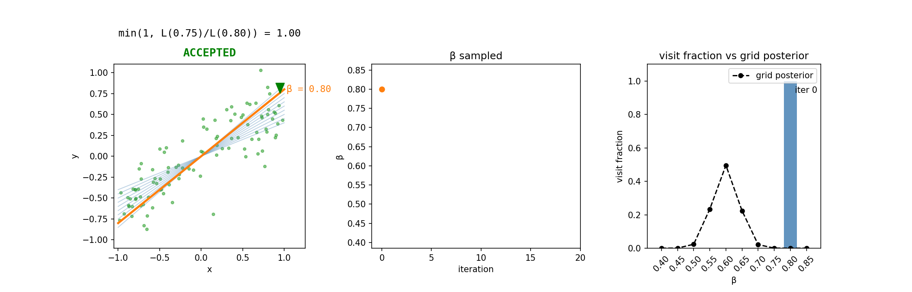
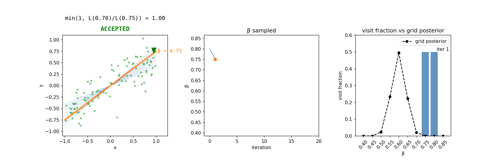
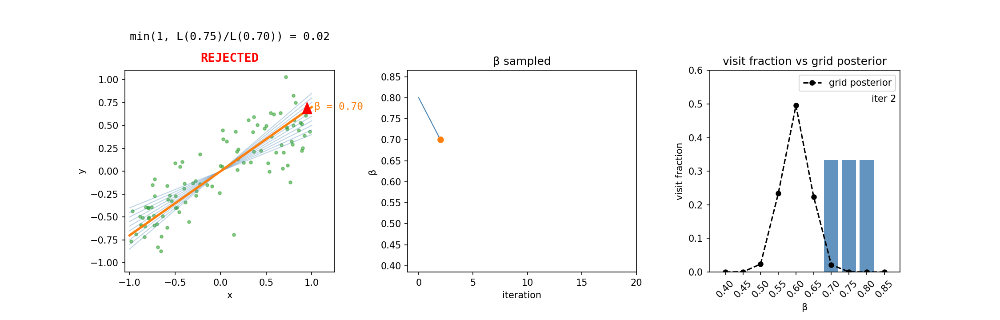
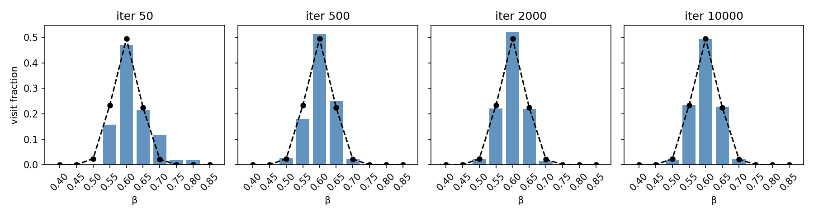
- Acceptance rate: 50.73%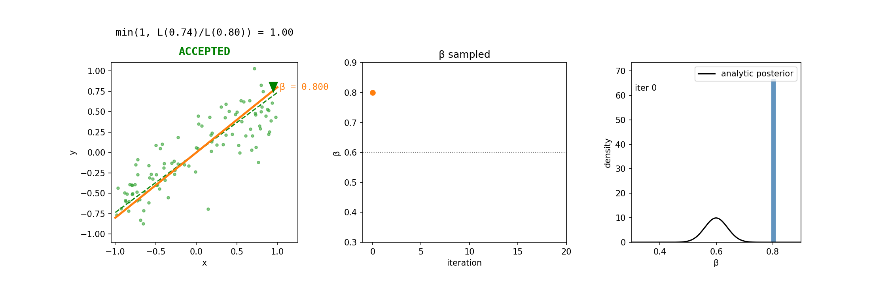
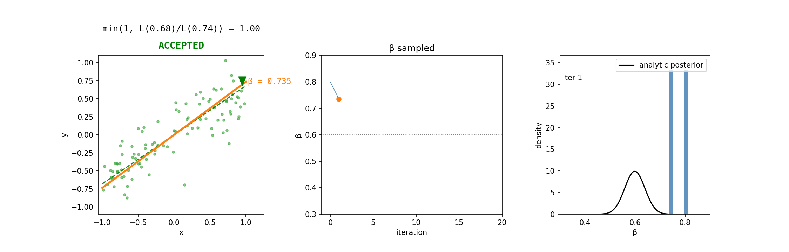
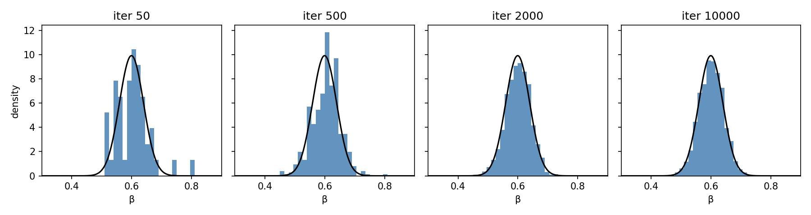
- Acceptance rate: 43.66%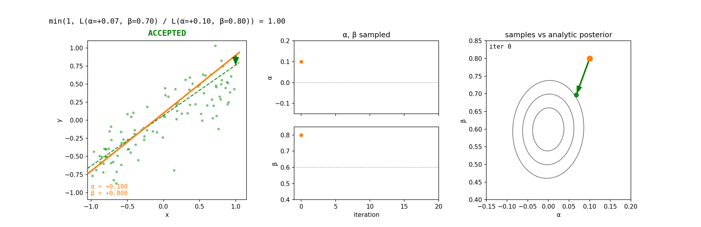
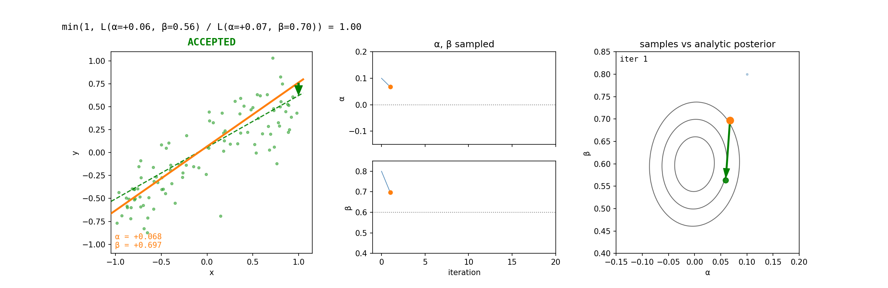
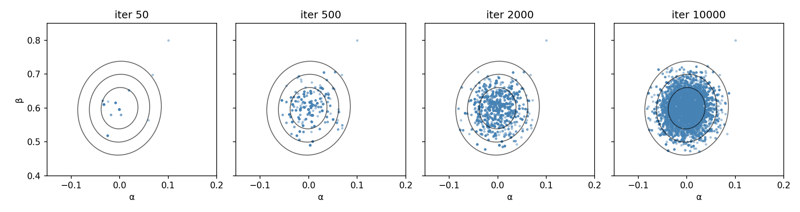
- Acceptance rate: 25.13%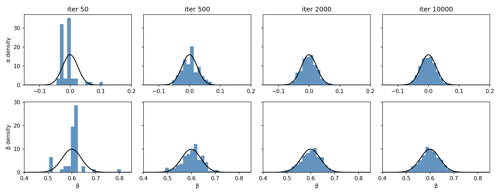
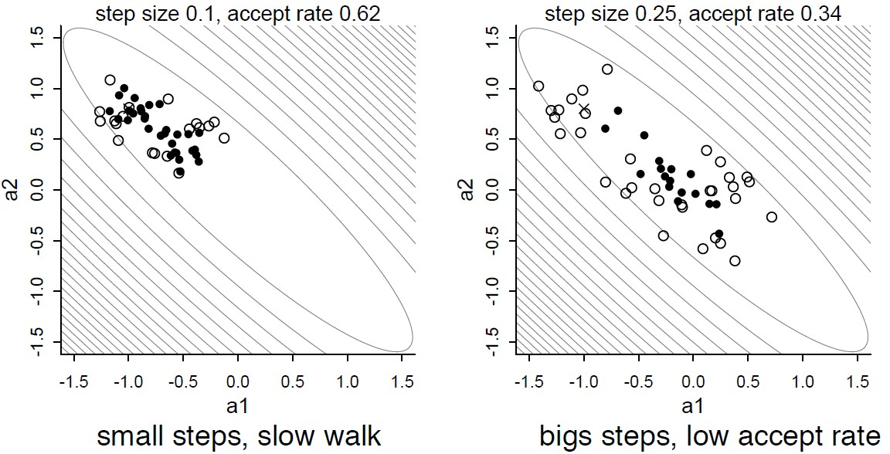
Fundamental tradeoff, especially as dimensions get high
demo from chi-feng.github.io/mcmc-demo
demo from chi-feng.github.io/mcmc-demo
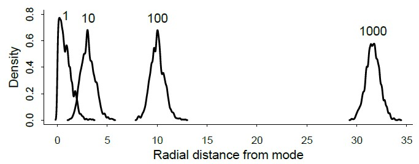
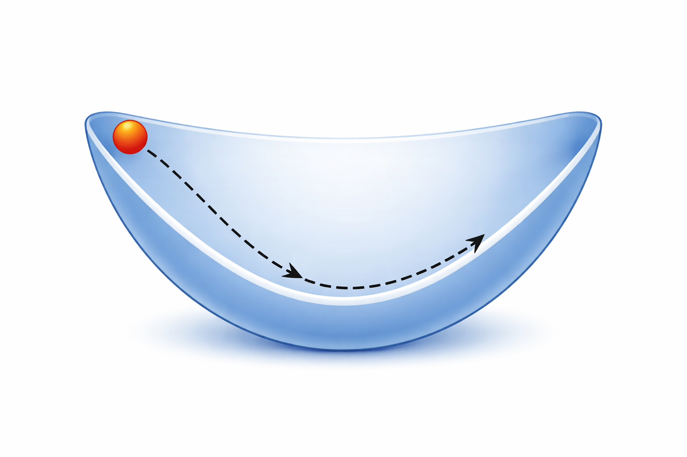
image generated by ChatGPT| Analogy | HMC |
|---|---|
| Valley landscape | Posterior distribution |
| Car’s position | Parameter values |
| Population density | Posterior probability |
| Random kick | Random momentum draw |
| Car’s physics | Hamiltonian dynamics |
| Pre-specified drive time | leapfrog steps × step size |
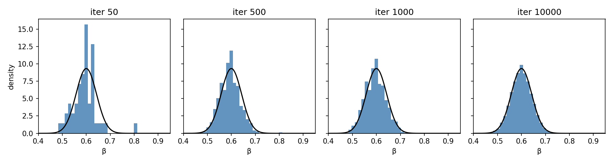
- Acceptance rate: 99.98%demo from chi-feng.github.io/mcmc-demo
demo from chi-feng.github.io/mcmc-demo
demo from chi-feng.github.io/mcmc-demo
Questions?